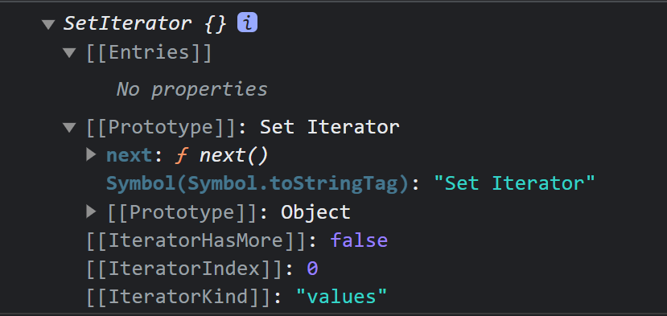

设计模式 - 迭代器模式和 Iterator 遍历器与 for…of 循环
在学习 Iterator 遍历器之前，我们先来学习下 JS 设计模式中的迭代器模式。
一、设计模式：迭代器模式
设计模式（Design pattern）代表了最佳的实践，通常被有经验的面向对象的开发人员所采用。
- 设计模式是开发人员在开发过程中面临的一般问题的解决方案。项目中合理地运用设计模式可以完美地解决很多问题，每种模式在现实中都有相应的原理来与之对应，每种模式都描述了一个在我们周围不断重复发生的问题，以及该问题的核心解决方案，这也是设计模式能被广泛应用的原因。
什么是迭代器模式
迭代器模式是指提供一种方法顺序访问一个聚合对象中的各个元素，而又不需要暴露该对象的内部结构。也就是说，即使不了解对象的内部结构，也可以按顺序访问其中的每个元素。
- 比如我们想要有序的访问数组中的每个成员，我们可以选择用
for循环或forEach来实现。注意： for 循环并不遵顺迭代器模式，而 forEach 是符合迭代器模式的，为什么呢 ？
- for 循环遍历数组中的每个成员，需要知道数组的长度，同时还需要知道以什么形式访问数组中的成员
- forEach 遍历数组中的成员，并不需要知道数组的长度和访问数组中成员的形式（即不需要知道对象的内部结构）
const arr = ["A", "B", "C"]; // 需要知道数组长度 arr.length for (let i = 0; i < arr.length; i++) { console.log(arr[i]); // 需要知道访问数组成员的形式 }
// 并不需要知道数组的内部结构，也可以按顺序访问其中的每个成员
arr.forEach((value) => {
console.log(value);
});
迭代器模式必需要满足条件：
在不暴露对象的内部结构时，有序的访问对象中成员。所以for循环并遵顺迭代器模式，forEach是符合的。
区分：迭代器模式和迭代器
- 迭代器模式：可以理解为在不需要了解对象的内部结构情况下，解决有序访问对象中成员的一种思想。
- 迭代器：可以理解为迭代器模式的一种具体方案的实现。 比如上面数组的
forEach方法，可以看作是一个简易的迭代器。
迭代器的分类
迭代器可以分为内部迭代器和外部迭代器，它们分别有各自的适用场景
内部迭代器：
- 内部迭代器通常被定义成一个方法，他是被动的，我们不需要关心内部迭代器的规则，只需要调用这个方法，就能有序的访问对象中的所有成员。
- 优点：使用非常简单
- 缺点：其灵活性相对较差。没有办法手动控制每一次迭代。其次不能与
break、continue、return关键字配合使用，终止迭代器- 上面的
forEach函数就属于内部迭代器。
外部迭代器：
- 外部迭代器是主动的，我们必须知道他的内部实现，同时必须显示的请求迭代下一个元素。
- 优点：其灵活性相对较好，我们可以手动控制迭代的过程或顺序。可以与
break、continue、return关键字配合使用，终止迭代器- 缺点：使用起来相对比较麻烦
- 后面 ES6 中要学习到的数组的
[Symbol.iterator]方法，就是一个外部迭代器
因为外部迭代器使用其来很麻烦，而且需要了解其内部的实现。所以在实际开发中，我们通常是暴露一个内部迭代器对外使用。
- 但由于内部迭代器不能与
break、continue、return关键字配合使用。- 所以在 ES6 中新增了
for...of循环语句，for...of主要就是用来消费外部迭代器。（具体如何使用，后面学习）
实现一个内部迭代器
数组的
forEach方法可以看作是一个简易的迭代器，那我们来手动实现下数组的forEach()方法const arr = ["A", "B", "C"]; Array.prototype.forEach = function (callBack) { for (let i = 0; i < this.length; i++) { callBack(this[i], i, this); } };
arr.forEach((value, index, arr) => {
console.log(value, index, arr);
});
不过内部迭代器也有自己的问题，就是灵活性相对较差。
- 比如，我们想要同时迭代两个数组，然后比较两个数组是否完全相等。上面的
forEach()方法就没有办法实现，只能人为的再定义一个方法，在这个方法内部结合forEach()方法来一起实现。
- 比较两个数组中的元素是否完全相等
arr.compare(arr2);const arr = ["A", "B", "C"]; const arr2 = ["A", "B", "C"]; Array.prototype.compare = function (arr2) { if (this.length !== arr2.length) { throw new Error(`两个数组不相等`); } // 遍历来对比 this.forEach((value, index) => { if (value !== arr2[index]) { throw new Error(`两个数组不相等`); } }); // 上面没有抛错，说明下面则是相等的 console.log("两个数组相等"); };- 上面不完美之处在于，我们必须知道 `arr2` 数组的**内部结构**，才能与数组 arr 作比较。
手动实现外部迭代器
外部迭代器是主动的，我们必须知道他的内部实现，同时必须显示的请求迭代下一个元素。其灵活性相对较好，我们可以手动控制迭代的过程或顺序。
- 手动实现一个外部迭代器，按顺序显示迭代数组中的每一个元素
- 基础版
实现思路：
- 在 Array 的原型上定义一个
getIterator方法，当数组.getIterator()方法，返回一个对象（迭代器对象），迭代器对象.next()方法显示迭代数组的下一个元素。 - 当数组中元素全部迭代完成，返回值为
undefined
Array.prototype.getIterator = function () { let index = 0; // 相当于指针，最开始指向数组中的第一个元素的下标 let self = this; // 保存this return { next() { return self[index++]; }, }; }; const arr = ["A", "B", "C"]; let it = arr.getIterator(); // 返回迭代器对象 // it.next() 显示请示迭代下一个元素 console.log(it.next()); // A console.log(it.next()); // B console.log(it.next()); // C console.log(it.next()); // undefined - 在 Array 的原型上定义一个
上面代码中
- 需要有序访问数组中的成员，只能先通过
数组.getIterator()方法返回迭代器对象，然后通过迭代器对象.next()方法手动的迭代数组中的下一个元素。
缺陷：- 上面的迭代器没有办法结合while循环一次性有序的遍历出数组的所有成员，因为没有办法判断对象中的成员是否迭代完成，所以我们需要对上面的代码做相关的修改。
- 优化一：添加
isDone和改进next方法- 给迭代器对象添加一个
isDone方法，用来判断当前对象中的成员是否全部迭代完成 - 同时修改
next()方法体中的代码
Array.prototype.getIterator = function () { let index = 0; // 相当于指针，最开始指向数组中的第一个元素的下标 let self = this; // 保存this return { isDone() { // 返回值为true，表示对象中成员全部迭代完成，false表示没有迭代完成 return index > self.length - 1; // index >= self.length }, next() { if (!this.isDone()) { return self[index++]; } }, }; }; const arr = ["A", "B", "C"]; const it = arr.getIterator(); console.log(it.next()); // A console.log(it.next()); // B console.log(it.next()); // C console.log(it.next()); // undefined- 利用
while循环，一次性有序的迭代出数组中的所有成员
const it = arr.getIterator(); while (!it.isDone()) { console.log(it.next()); } - 给迭代器对象添加一个
缺陷：
- 如果我们想要在while循环中结合
break,continue,return关键字终止迭代器（退出循环） 时，以上迭代器没有办法实现。const arr = ["A", "B", "C"]; const it = arr.getIterator(); while (!it.isDone()) { if (it.next() === "B") { break; } console.log(it.next()); } // 输出结果 B undefined以上代码输出结果 :
B undefined并不是我们所期望的，我们期望的结果是A。
为什么呢 ？
- while 循环第一次，
it.next()的结果为 A，肯定不等于 B，所以执行console.log(it.next())，这里的it.next()相当于迭代下一个元素，结果为B。所以并没有得到我们想要的 A 。
- 优化二：next() 方法返回值为对象
把
next()方法的返回结果改成如下结构的对象{ value: "数组成员", // 值表示数组成员 }- 具体代码实现如下：
Array.prototype.getIterator = function () { let index = 0; // 相当于指针，最开始指向数组中的第一个元素的下标 let self = this; // 保存this return { isDone() { // 返回值为true，表示对象中成员全部迭代完成，false表示全部元素没有迭代 return index > self.length - 1; // index>=self.length }, next() { if (!this.isDone()) { return { value: self[index++], }; } }, }; }; const arr = ["A", "B", "C"]; let it = arr.getIterator(); // 返回迭代器对象 console.log(it.next()); // {value: 'A'} console.log(it.next()); // {value: 'B'} console.log(it.next()); // {value: 'C'} console.log(it.next()); // {value: undefined}
- 利用
while循环，一次性有序的迭代出数组中的所有成员const arr = ["A", "B", "C"]; // while循环，实现一次性有序的遍历出数组的所有成员 let it = arr.getIterator(); while (!it.isDone()) { obj = it.next(); console.log(obj.value); } // 输出结果： A B C
while循环与break、continue、return结合终止迭代器或退出while循环const arr = ["A", "B", "C"]; // while循环，实现一次性有序的遍历出数组的所有成员 let it = arr.getIterator(); while (!it.isDone()) { obj = it.next(); if (obj.value === "B") { // break; continue; } console.log(obj.value); }
// 使用break关键字执行结果： A
// 使用continue关键字执行结果： A C
缺陷：
- 如果我手动调用迭代器的
next()方法来迭代下一个元素时，如果数据结构中的成员值为undefined，则我们没有办法区分返回的值undefined是数据结构本身的元素，还是表示没有下一个元素可以迭代了。所以还可以再优化。
- 优化三：修改 next 方法返回结果
把·方法的返回结果修改为以下结构的对象
{ value: "数组成员", // 值表示数组成员，当done为true时，其值为undefined done: false, // false 表示没有遍历完，true表示遍历完成 }
具体代码实现如下：
Array.prototype.getIterator = function () { let index = 0; // 相当于指针，最开始指向数组中的第一个元素的下标 let self = this; // 保存this return { isDone() { // 返回值为true，表示对象中成员全部迭代完成，false表示没有 return index > self.length - 1; // index>=self.length }, next() { let that = this; if (!this.isDone()) { return { value: self[index++], done: false, }; } else { return { value: undefined, done: true, }; } }, }; };
const arr = [“A”, “B”, “C”];
let it = arr.getIterator(); // 返回迭代器对象
console.log(it.next());
console.log(it.next());
console.log(it.next());
console.log(it.next());
- while 循环与break、continue、return结合终止迭代器或退出 while 循环
let it2 = arr.getIterator(); // 返回迭代器对象 while (!it2.isDone()) { let obj = it2.next(); if (obj.value === "B") { // break; continue; } console.log(obj.value); } // 输出结果为：A C
迭代器实际应用场景
通过上面的学习，我们知道迭代器模式是一种解决在不需要知道对象的内部结构情况下，有序遍历出对象中成员的一种解决思想。
- 而迭代器是实现这种思想的一种具体解决方案
实现一个迭代器的基本思路：
- 创建一个方法 —-> 这个方法返回一个对象（迭代器对象）—-> 调用迭代器对象身上的方法（通常有
next或isDone）可以显示迭代下一个成员，或判断成员是否全部迭代完成。
备注：
- 如果迭代器对象还需要其它功能，可自己添加相关方法。
- 创建 Stack 类，添加一个外部迭代器
- 外部迭代器在while循环中可以与
break、continue、return关键字配合使用，功能更强大
class Stack { - 外部迭代器在while循环中可以与
#length; // 私有属性
#data = []; // 私有成员，存储入栈成员
constructor(length) {
this.#length = length;
}
// 返回#lenght属性，只能访问，不能修改
get length() {
return this.#length;
}
// 判断栈是否空
isEmpty() {
return this.#data === 0;
}
// 栈满
isFull() {
return this.#data.length === this.#length;
}
// 入栈
push(value) {
if (this.isFull()) throw new Error(“栈满，不能再添加元素”);
this.#data.push(value);
return this; // 支持链式调用
}
// 出栈
pop() {
if (this.isEmpty()) throw new Error(“栈空，不能再添加元素”);
return this.#data.pop();
}
// 迭代器方法，用来生成迭代器对象
getIterator() {
let index = 0;
let self = this;
return {
isDone() {
return index >= self.#data.length;
},
next() {
if (!this.isDone()) {
return {
value: self.#data[index++],
done: false,
};
} else {
return { value: undefined, done: true };
}
},
};
}
}
const stack = new Stack(5);
const stack2 = new Stack(3);
stack.push(1).push(2).push(3).push(4).push(5);
stack.pop();
stack.pop();
// 访问栈容器长度
stack.length = 999;
console.log(stack.length); // 5
// 生成迭代器对象 it
const it = stack.getIterator();
console.log(it.next());
console.log(it.next());
console.log(it.next());
console.log(it.next());
// while循环，一次性有序的迭代出对象的所有成员
const it2 = stack.getIterator();
let obj = it2.next();
while (!obj.done) {
console.log(obj.value);
obj = it2.next();
}
- 为 Stack 类添加内部迭代器 forEach 方法
外部迭代器相对于内部迭代器灵活性更高，但是使用起来相对麻烦。所以我们通常会暴露内部迭代器对外使用。
- 接下来我们给
Stack类添加内部迭代器forEach方法
// 内部迭代器 forEach(callBack) { for (var i = 0; i < this.#data.length; i++) { callBack(this.#data[i], i, this); } } - 接下来我们给
- 完整代码
class Stack { #length; // 私有属性 #data = []; // 私有成员，存储入栈成员 constructor(length) { this.#length = length; } // 返回#lenght属性，只能访问，不能修改 get length() { return this.#length; } // 判断栈是否空 isEmpty() { return this.#data === 0; } // 栈满 isFull() { return this.#data.length === this.#length; } // 入栈 push(value) { if (this.isFull()) throw new Error("栈满，不能再添加元素"); this.#data.push(value); return this; // 支持链式调用 } // 出栈 pop() { if (this.isEmpty()) throw new Error("栈空，不能再添加元素"); return this.#data.pop(); } // 迭代器方法，用来生成迭代器对象 getIterator() { let index = 0; let self = this; return { isDone() { return index >= self.#data.length; }, next() { if (!this.isDone()) { return { value: self.#data[index++], done: false, }; } else { return { value: undefined, done: true }; } }, }; } // 内部迭代器 forEach(callBack) { for (var i = 0; i < this.#data.length; i++) { callBack(this.#data[i], i, this); } } }
const stack = new Stack(5);
const stack2 = new Stack(3);
stack.push(1).push(2).push(3).push(4).push(5);
stack.forEach((v) => {
console.log(v); // 1 2 3 4 5
});
将 class（数据类）与 迭代器类分离
我们很多时候会有这样的需求，我可能有 10 个类，每个类都有一个自己的外部迭代器，这些迭代器的内部实现都是相同的。
如果我们把迭代器与某个类绑定死，那就意味着这个迭代器没有办法供 10 个类重用，只能为每个类单独写一个。
- 所以我们可以将迭代器分类出去，单独定义成一个类，然后在其它类的内部来使用这个迭代器
// 迭代器类 创建迭代器对象 class DataIterator { // 私有属性 #data; // 接受传递过来用来遍历的数据对象 #index = 0; // 下标 constructor(data) { this.#data = data; } // 判断元素是否迭代完成 isDone() { return this.#index >= this.#data.length; } // 返回下一个元素 next() { return this.isDone() ? { value: undefined, done: true } : { value: this.#data[this.#index++], done: false }; } }
// 数据类
class DataContainer {
#data; // 私有属性
constructor(data = []) {
if (Array.isArray(data)) {
this.#data = data;
} else {
throw new Error(“传入的参数只能是一个数组”);
}
}
// 生成迭代器对象的方法
getIterator() {
return new DataIterator(this.#data);
}
//….. 对象其它方法自行添加
}
// 创建实例对象
const obj = new DataContainer([“A”, “B”, “C”]);
// 生成一个迭代器对象
const it = obj.getIterator();
// 调用next方法，手动遍历下一个元素
console.log(it.next());
console.log(it.next());
console.log(it.next());
console.log(it.next());
const it2 = obj.getIterator();
// while循环
while (!it2.isDone()) {
const obj = it2.next();
console.log(obj.value);
}
解读：
DataIterator类DataIterator类用来创建迭代器对象，有#data和#index两个私有属性，同时有isDone()和next()两个实例方法。
#data用来接受需要迭代的数据对象#index用来控制访问元素的下标，相当于一个指针。isDone()方法用来判断数据对象的成员是否迭代完成next()方法用来返回下一个数据对象的下一个成员
解读：
DataContainer类DataContainer类用来模拟一个数据类，他有#data私有属性和getIterator()实例方法。
#data属性，用来保存DataContainer类实例化对象的数据，其类型必需是一个数组。getIterator()方法用来生成一个迭代器对象，它的返回值为new DataIterator(this.#data);其中的this.#data参数为需要迭代的数据对象。
迭代器的应用
- 当我们创建一个类时，可以为这个类添加外部迭代器和内部迭代器，这样就可以在不暴露数据结构的内部结构情况下有序的访问其成员。
- 我们可以将数据容器类与外部迭代器类分离，这样就可以实现迭代器类的复用。
二、Iterator 是什么 ？
ES6中的Iterator遍历器（迭代器）其实就是参考了JS设计模式中的迭代器模式。
寻找 Iterator
查看数组原型链上继承的方法
- 在控制台打印一个数组，查看原型
- 数组原型上的
[Symbol.iterator]属性就是一个方法，也就是JS内置的一种外部迭代器，这个方法返回一个迭代器对象。
使用
Itertaor数据结构的
[Symbol.iterator]属性是一个函数，用来返回一个迭代器对象- 迭代器对象身上有一个
next方法，调用迭代器对象的next()方法，返回一个对象 - 对象有两个属性，分别为
value和done value属性值为当前成员的值，done属性是一个布尔值，表示遍历是否结束，false 表示未结束，true 表示结束。Symbol.iterator本身是一个表达式，返回Symbol对象的iterator属性，这是一个预定义好的特殊的Symbol类型的值。- 所以作为对象的属性时，要写在
[]方括号中
// 数组 let arr = [1, 2, 3]; const iterator = arr[Symbol.iterator](); // 生成可遍历对象 // 调用可遍历对象的 next方法,迭代出下一个成员 console.log(iterator.next()); console.log(iterator.next()); console.log(iterator.next()); console.log(iterator.next());- 迭代器对象身上有一个
while循环配合迭代器，一次性有序的迭代出数组中的所有成员- 注意：
[Symbol.iterator]返回的迭代器对象，没有isDone方法，所以这里用while循环的方式和我们手写的外部迭代器不一样
const it = arr[Symbol.iterator](); let obj = it.next(); while (!obj.done) { console.log(obj.value); obj = it.next(); // 1 2 3 }- 注意：
Iterator是什么 ？Iterator是一个遍历的过程，具体如下- 调用数据的
Symbol.iterator（可遍历对象的生成方法）—-> 生成iterator（迭代器对象）—-> 调用iterator.next()—>iterator.next()—-> …. 直到next方法返回值对象的done属性值为true时，才停止遍历，这样的一个完整过程称之为Iterator数组的
Symbol.iterator方法，可以理解为可遍历对象的生成方法，生成迭代器对象
- 调用数据的
手动实现数组的
Symbol.iterator方法其内部实现原理与我们讲的设计模式中的迭代器模式完全相同
- 只是代码上稍微有一些差异，因为数组的
Symbol.iterator方法，生成的迭代器对象只有next方法，没有isDone方法。
Array.prototype[Symbol.iterator] = function () { let index = 0; let self = this; return { next() { return index < self.length ? { value: self[index++], done: false, } : { value: undefined, done: true }; }, }; };const arr = [“a”, “b”, “c”, “d”];
const it = arrSymbol.iterator;
console.log(it.next());
console.log(it.next());
console.log(it.next());
console.log(it.next());
console.log(it.next());// 一次性迭代出数组的所有成员
const it2 = arrSymbol.iterator;
let obj = it2.next();
while (!obj.done) {
console.log(obj.value);
obj = it2.next();
}- 只是代码上稍微有一些差异，因为数组的
- 用
while循环，遍历出数组成员- 特别注意，用
continue的时候，避免进入死循环
//break while (!obj.done) { if (obj.value === "c") { break; } console.log(obj.value); obj = it.next(); } //continue while (!obj.done) { if (obj.value === "c") { obj = it.next(); continue; } console.log(obj.value); obj = it.next(); } - 特别注意，用
三、for ... of
通过上面的学习，我们知道，
Iterator的使用特别的麻烦，难道以后，我们都需要那样来使用Iterator吗 ？那肯定是不用的，如果这么麻烦，那估计早就没人用了。
- 官方也不推荐直接使用
Iterator。所以ES6中提供了for...of循环来消费Iterator。
- for … of 遍历迭代器对象
for...of用来遍历迭代器对象，比如数组的[Symbol.iterator]方法，调用这个方法，可以生成一个迭代器对象。
const arr = ["a", "b", "c", "d"]; const it = arr[Symbol.iterator](); for (let v of it) { console.log(v); }
ES6中的数组、Set、Map都有keys、values、entries方法，这三个方法调用后，都返回一个迭代器对象，所以可以用for...of来遍历他们
| 方法 | 说明 |
|---|---|
| keys() | 返回一个遍历器对象，用来遍历所有的键名 |
| values() | 返回一个遍历器对象，用来遍历所有的键值 |
| entries() | 返回一个遍历器对象，用来遍历 [键名，键值] 成的数组。 |
 - 其他方法也类似const s = new Set(); console.log(s.keys());
数组
- 用
for...of遍历数组的keys()方法可以遍历数组的下标
const arr = [1, 2, 3]; console.log(arr); //arr是一个可迭代对象 console.log(arr.keys()); //arr.keys()会返回一个迭代器对象 for (let k of arr.keys()) { console.log(k); //0 1 2 } for (let k of arr.values()) { console.log(k); //1 2 3 } for (let k of arr.entries()) { console.log(k); // [0, 1] [1, 2] [2, 3] }- 用
Set
Set对象没有键名，所以返回成员值
const s = new Set([1, 2, 3]); for (let k of s.keys()) { console.log(k); // 1 2 3 } for (let v of s.values()) { console.log(v); // 1 2 3 } for (let [k, v] of s.entries()) { console.log(k, v); // 1 1 2 2 3 3 }Map
const m = new Map([ ["数组", ["a", "b"]], ["对象", { a: 1, b: 2 }], ["函数", function () {}], ]);for (let k of m.keys()) {
console.log(k);
}
for (let v of m.values()) {
console.log(v);
}
for (let [k, v] of m.entries()) {
console.log(${k}=>${v});
}
注意：
- 迭代器对象遍历完，就不能再次使用了，因为
done已经变成true了
for … of 遍历可迭代对象
只要一个对象身上有
[Symbol.iterator]属性，则就可以用for...of来遍历对象，我们把带有[Symbol.iterator]属性的对象称为可遍历（迭代）对象- 也就是说，当用
for...of来遍历某个对象时，内部会自动调用对象的[Symbol.iterator]方法来生成一个迭代器对象，然后按顺序迭代对象的成员。 - 数组原生自带
[Symbol.iterator]属性，所以我们可以用for...of来遍历其成员
const arr = [1, 2, 3]; for (let v of arr) { console.log(v); // 1 2 3 }- 也就是说，当用
原生可遍历对象
原生可遍历对象，是指
JS中原生自带[Symbol.iterator]属性的对象。
JS 中具原生可遍历对象有：- Array 数组
- Set
- Map
- String 字符串
- arguments 、NodeList 等 类数组对象
因为这些数据结构原生自带[Symbol.iterator]属性，所以都可以利用for...of来遍历。
- Set
const set = new Set([1, 2, 3]); const iterator = set[Symbol.iterator](); console.log(iterator.next());//{value: 1, done: false} console.log(iterator.next());//{value: 2, done: false} console.log(iterator.next());//{value: 3, done: false} console.log(iterator.next());//{value: 4, done: false} - Map
const map = new Map([ [[1, 3, 3], "数组"], [{ a: 1, b: 2 }, "对象"], ]); const iterator = map[Symbol.iterator](); console.log(iterator.next()); console.log(iterator.next()); console.log(iterator.next()); - String
const str = "hello"; for (let v of str) { console.log(v); } // 结果: h e l l o - 类数组
function sum() { for (let v of arguments) { console.log(v); } } sum(1, 2, 3, 4); // 结果 1 2 3 4
特别强调：
- Object 对象，没有
[Symbol.iterator]属性，则不能用for...of来遍历。
可迭代协议和迭代器协议
可迭代协议：
- 可以理解为一个对象如果想要用
for...of来遍历，那他身上必需要有[Symbol.itrerator]属性，否则是不能用for...of来遍历的。
迭代器协议： - 是指迭代器对象必需要有
next()方法，其方法的返回值必需为一个对象，对象有value和done两个属性，value表示每次迭代的成员，done用来标识成员是否迭代完成。
- 可以理解为一个对象如果想要用
为对象添加迭代器接口
如果对象要能用
for...of来遍历，则需要遵顺可迭代协议和迭代器协议。- 即对象身上要有
[Symbol.iterator]属性，其为一个函数，调用该函数会返回一个迭代器对象。 - 迭代器对象要遵顺迭代器协议，即迭代器对象有
next方法，方法返回值为一个对象，对象有value和done两个属性等。
const obj = { data: [1, 2, 3, 4], [Symbol.iterator]() { let index = 0; self = this; return { next() { if (index < self.data.length) { return { value: self.data[index++], done: false, }; } else { return { value: undefined, done: true, }; } }, }; }, };let it = objSymbol.iterator;
console.log(it.next());
console.log(it.next());
console.log(it.next());
console.log(it.next());
console.log(it.next());// 当用 for…of 来遍历obj对象时，其内部会自动调用obj的 [Symbol.iterator]方法来生成一个迭代器对象，来对其data数据中的成员遍历。
for (let v of obj) {
console.log(v);
}- 即对象身上要有
注意：
- 自定义的
[Symbol.iterator]方法，单独调用，其生成的迭代器对象，不能用for...of来遍历。let it = obj[Symbol.iterator](); for (let v of it) { console.log(v);//报错 }
- 退出 for … of 循环
在for…of循环语句中，可以使用
- break关键字退出整个循环
- continue关键字来跳过当次循环
- throw关键字抛出错误，同时退出循环
- 当在
for ... of循环在一个函数体中时，可以在for ... of循环体中使用return关键字，返回函数的返回值
- break 关键字
const arr = [1, 2, 3, 4, 5]; for (let v of arr) { if (v === 3) { break; } console.log(v); } // 结果： 1 2 - continue 关键字
const arr = [1, 2, 3, 4, 5]; for (let v of arr) { if (v === 3) { continue; } console.log(v); } // 结果 1 2 4 5 - throw 关键字
const arr = [1, 2, 3, 4, 5]; for (let v of arr) { if (v === 3) { throw new Error("抛出错误，退出循环"); } console.log(v); } // 结果 1 2 Uncaught Error: 抛出错误，退出循环 - return 关键字
function fn() { const arr = [1, 2, 3, 4, 5]; for (let v of arr) { if (v === 3) { return "停止"; } console.log(v); } } console.log(fn()); // 结果 1 2 停止
- 总结
可迭代对象与迭代器对象
可迭代对象
- 定义：带有
[Symbol.iterator]属性的对象 - 与迭代器对象的关系：调用可迭代对象的
[Symbol.iterator]方法会自动生成一个迭代器对象 - 原生可迭代对象包括：
Array数组、Set、Map、String字符串、arguments、NodeList等类数组对象 - 可迭代协议：对象身上必需要有
[Symbol.itrerator]属性
迭代器对象
- 定义：迭代器对象身上有一个
next方法，调用这个方法，返回一个对象；对象有两个属性，分别为value和done - 迭代器对象包括：
- 数组、
Set、Map都有keys、values、entries方法，这三个方法调用后，都返回一个迭代器对象 - 调用可迭代对象的
[Symbol.iterator]方法生成的迭代器对象
- 数组、
- 迭代器协议：是指迭代器对象必需要有
next()方法，其方法的返回值必需为一个对象，对象有value和done两个属性，value表示每次迭代的成员，done用来标识成员是否迭代完成。
//arr是Array的实例，自带[Symbol.iterator]方法，所以arr是可迭代对象 const arr = [1, 2, 3]; //调用[Symbol.iterator]方法的时候，会自动生成迭代器对象，也就是it const it = arr[Symbol.iterator]();- 定义：带有
for...of循环for...of既可以遍历迭代器对象，也可以遍历可迭代对象- 如果对象要能用
for...of来遍历，则需要遵循可迭代协议和迭代器协议因此，为对象添中迭代器接口的方式，就是使他遵循可迭代协议和迭代器协议
遍历迭代器对象：有两种
- 遍历 调用
[Symbol.iterator]方法的时候，生成的迭代器对象const arr = ["a", "b", "c", "d"]; const it = arr[Symbol.iterator](); for (let v of it) { console.log(v); }
- 遍历
keys、values、entries方法调用后，返回的迭代器对象
- keys是键名，value是键值，entries是[键名，键值]的数组
const s = new Set([1, 2, 3]); for (let k of s.keys()) { console.log(k); // 1 2 3 }
遍历可迭代对象
- 也就是原生的可迭代对象：
Array数组、Set、Map、String字符串、arguments、NodeList等类数组对象const arr = [1, 2, 3]; for (let v of arr) { console.log(v); // 1 2 3 }
- 遍历
Array的实例时，实际上是在遍历valus()生成的迭代器- 遍历
Set的实例时，实际上是在遍历valus()生成的迭代器- 遍历
Map的实例时，实际上是在遍历entries()生成的迭代器所以他们得到的值是一样的
注意：
- 虽然可以手动为对象添中迭代器接口，也就是使他遵循可迭代协议和迭代器协议
- 但是调用自定义的
[Symbol.iterator]方法，其生成的迭代器对象，不能用for...of来遍历。
- 退出
for ... of循环的方式有break、continue、throw、return
四、有哪些场景使用了 Iterator ？
在
JS这门语方中，有很多地方用到了Iterator，主要有
- for…of 循环
- 数组的展开运算符
- 数组解构赋值
- Set 和 Map 构造函数的参数
- Array.from()
- Promise.all()
- Promise.race()
- yield*操作符，在生成器中使用
- 验证方案
我们知道
- 数组的解构赋值，等号的右边只要是一个可迭代对象就可以
- 数组的扩展运算符后面只要是一个可迭代对象就可以
其本质都是调用了对象身上的
[Symbol.iterator]方法，生成迭代器对象，然后遍历取出对象中的成员。
怎么验证？ - 修改对象身上的[Symbol.iterator]方法
- 修改前：
let str = "hello"; const [a, b] = str; // 解构赋值 console.log(a, b); // h e console.log(...str); //h e l l o - 修改后：
let str = “hello”;// 接下来我们修改字符串原型上的[Symbol.iterator]方法 String.prototype[Symbol.iterator] = function () { index = 0; return { next() { if (index < 3) { return { value: index++, done: false, }; } else { return { value: undefined, done: true, }; } }, }; };
const [x, y] = str; // 解构赋值
console.log(x, y); // 0 1
// 解构赋值内部相当于执行了以下代码
// const it = strSymbol.iterator;
// x = it.next().value;
// y = it.next().value;
// 展开运算符
console.log(…str); // 0 1 2- 修改了`String.prototype[Symbol.iterator]`方法，所以在解构赋值时 其结果并不是输入`h e`，而是输出了`0 1`。 - 说明解构赋值时，其内部就是自动调用了`String.prototype[Symbol.iterator]`方法，然后迭代内部的成员来完成解构赋值的。
关于以下使用场景
- Set 和 Map 构造函数的参数
- Array.from()
- Promise.all()
- Promise.race()
- yield*操作符，在生成器中使用
其原理和上面的数组的解构赋值原理是一样的，都是调用了对象身上的[Symbol.iterator]方法，生成了一个迭代器对象，然后迭代内部的成员来完成相关操作。
- 面试题
编写相关代码，使下面代码成立，并且
a,b成功赋值const [a, b] = { a: 1, b: 2 };答案解析
- 数组的解构赋值
=号右边只要是一个可迭代对象就可以，但{a:1, b:2}是一个Object类型的对象，他不是一个可迭代对象，也就是说他没有[Symbol.iterator]属性。 - 所以如果要使代码成立，并且
a,b能成功赋值，则需要手动为{a:1, b:2}对象添加iterator接口。 - 迭代器是按顺序迭代成员，但对象是无序的；所以有两种方法
- 数组的解构赋值
方法一：
Object.prototype[Symbol.iterator] = function () { let index = -1; const self = this; return { next() { index++; if (index === 0) { return { value: 1, done: false }; } else if (index === 1) { return { value: 2, done: false }; } else { return { value: undefined, done: true }; } }, }; }; const [a, b, c] = { a: 1, b: 2 }; console.log(a, b, c); //1 2 undefined方式二：
Object.keys(obj)：返回obj的属性名
Object.prototype[Symbol.iterator] = function () { let key = Object.keys(this); let index = 0; const self = this; return { next() { if (index < key.length) { return { value: self[key[index++]], done: false }; } else { return { value: undefined, done: true }; } }, }; }; const [a, b, c] = { a: 1, b: 2 }; console.log(a, b, c); //1 2 undefined
五、迭代器对象的 return 、throw 方法
迭代器对象除了具有
next()方法，还可以具有return方法和throw方法。
- 如果自己定义迭代器对象，则必需要有
next()方法，但是return和throw方法则是可选的。
return方法如果迭代器提前关闭时，则会自动调用
return方法。提前退出迭代器情况如下：- 遇到
break，throw，return关键字时，会提前退出循环时
解构赋值时，未能消费所有值时
注： return方法的返回值，必需是一个对象，这是Generator规格决定的。return应用场景：如果一个对象在完成遍历前做某些操作，则可以为迭代器对象添加return方法。
class DataContainer { data = [1, 2, 3, 4]; [Symbol.iterator]() { let index = 0; let data = this.data; return { next() { if (index < data.length) { return { value: data[index++], done: false, }; } else { return { value: undefined, done: true, }; } }, return() { console.log("提前提出for...of,return方法被调用"); return { done: true }; }, }; } }for (let v of new DataContainer()) {
if (v === 2) {
break;
}
console.log(v);
}
//1
// 提前提出for…of,return方法被调用- 遇到
不能关闭的迭代器
因为
return方法是可选的，所以数组、Set、Map、String，类数组的迭代器对象上都没有return方法。
当for...of遍历时遇到break、continue、return、throw，都不会关闭迭代器。如果一个迭代器没关闭，则还可以继承从上次离开的地方继承迭代。
const arr = new Set(["a", "b", "c", "d"]); const it = arr[Symbol.iterator](); for (let v of it) { console.log(v); // a b if (v === "b") { break; } }// 上面的迭代器没有关闭，下面继承迭代
for (let v of it) {
console.log(v); // c d
}
六、为什么需要迭代器和 for … of
在 JS 中遍历的方法有
for、forEach、for...in，为什么还有要for...of呢 ？ 也就是说，为什么需要迭代器呢 ？
- 因为迭代器主要是供
for...of来消费的。
对比不同的遍历方式
那接下来我们就通过对比来了解不同遍历方式之间的差异，从而就能知道为什么还需要迭代器和
for...of遍历方法 说明 for for 循环可以用来遍历数组或类数组对象，但是都需要了解其 length 属性和访问元素的方式。也就是都需要了解其内部结构。写起来也比较麻烦 forEach forEach 可以用来遍历数组、Map、Set，其不需要暴露它们的内部结构，但是他只限于访问数组、Map、Set。其次 forEach 没有办法和 break、continue、return 关键字使用退出循环。 for…in for…in主要是用来遍历 Object 类型的对象而用的，当然也可以用来遍历数组，但是其遍历得到的是数组的键名，而非数组的成员。其次还会遍历手动添加到数组身上的键，也会遍历原型上的键。 for…of 有for…in一样简洁的语法，但没有for…in的那些缺点；不同于 forEach 方法，可以与 break、continue、return 配合使用；不同于 for 循环，其遍历不需要暴露对象的内部结构；for…of提供了遍历所有数据的统一操作接口。 迭代器作用
迭代器主要作用有以下 3 点：
- 为各种不同的数据结构（对象）提供了统一的，简便的访问接口。
- 数据结构的成员以一定的顺序遍历出来
Iterator接口，主要供for...of消费，一个对象只要有iterator接口，就可以利用for...of来遍历- 以后我们如果不想暴露对象的内部结构，而有希望能用
for...of这种统一的方式来遍历数据成员，就可以为对象添加iterator接口。
ES6字符串、数组、对象的新增方法和常见应用
一、字符串的新增方法
| 方法 | 说明 | 是否更改原数组 |
|---|---|---|
| padEnd | 用一个字符串从当前字符串的末尾来填充当前字符串，使字符串达到指定长度。返回结果为填充后的新字符串。 | 否 |
| padStart | 用一个字符串从当前字符串的左侧来填充当前字符串，使字符串达到指定长度。 | 否 |
| trimStart | 方法会删除字符串开头的空白字符 | 否 |
| trimEnd | 方法会删除字符串末尾的空白字符 | 否 |
| trim | 方法从字符串的两端清除空格 | 否 |
| startsWith | 方法用来判断当前字符串是否以另外一个给定的子字符串开头 | 否 |
| endsWith | 方法用来判断当前字符串是否是以另外一个给定的子字符串“结尾”的 | 否 |
| repeat | 构造并返回一个新字符串，该字符串包含被连接在一起的指定数量的字符串的副本 | 否 |
- padStart
用一个字符串从当前字符串的左侧来填充当前字符串，使字符串达到指定长度。
- 返回结果为填充后的新字符串
- 语法
padEnd(targetLength[, padString])targetLength当前字符串需要填充到的目标长度padString填充字符串，如果需要的话，会反复多次来填充，默认值为空格
- 基本用法
console.log("abcd".padStart(7, "*")); // ***abcd console.log("abcd".padStart(7, "@#")); // @#@abcd - 注意事项
- 如果
targetLength的值<=当前字符串的长度，则返回当前字符串本身
console.log("abcd".padStart(4, "*")); // abcd- 如果 padString 长度过长，只会保留最左侧部分，其他部分会被截断
console.log("abcd".padStart(8, "01234")); // 0123abcd - 如果
- padEnd
用一个字符串从当前字符串的末尾来填充当前字符串，使字符串达到指定长度。
- 返回结果为填充后的新字符串
- 语法
padEnd(targetLength[, padString])targetLength当前字符串需要填充到的目标长度padString填充字符串，如果需要的话，会反复多次来填充
- 基本用法
let str2 = “清心”.padEnd(5, “52”);let str = "清心".padEnd(6, "爱你"); console.log(str); // 清心爱你爱你
console.log(str2); // 清心525 - 注意事项
- 如果 targetLength 的值 <= 当前字符串的长度，则返回当前字符串本身
let str = "清心".padEnd(2, "爱你"); console.log(str); // 清心- 如果 padString 长度过长，只会保留最左侧部分，其他部分会被截断
str = "清心".padEnd(5, "520def"); console.log(str); // 清心520 - 案例应用
将以下 map 数据，在控制台以以下图形式显示出来
const map = new Map([ ["luobo", 5], ["baicai", 2.5], ["doujiao", 3], ["huacai", 5], ]);
for ([k, v] of map) { console.log(k.padEnd(20, "-") + v); }
trimStart
trimStart()方法会删除字符串开头的空白字符。trimLeft()是此方法的别名let str = " love "; console.log(str.length); // 10 str = str.trimStart(); // 去掉前面的空白字符 console.log(str); // "love " console.log(str.length); // 7trimEnd
trimEnd()方法会删除字符串末尾的空白字符。trimRight()是这个方法的别名。let str = " love "; console.log(str.length); // 10 str = str.trimEnd(); // 去掉字符串后面的空白字符 console.log(str); // " love" console.log(str.length); // 7trim
trim()方法从字符串的两端清除空格，返回一个新的字符串，而不修改原始字符串这三个方法都是返回新字符串，不会改变原始字符串
let str = " love "; console.log(str.length); // 10 str = str.trim(); console.log(str); // "love" console.log(str.length); // 4startsWith
startsWith()方法用来判断当前字符串是否以另外一个给定的子字符串开头。如果是返回true，否则返回false。- 注意：此方法，严格区分大小写
- 语法
str.startsWith(searchString[, position])searchString要搜索的子字符串position可选参数在str中搜索searchString的开始位置，默认值为0
- 基本用法
console.log("data_iconfont".startsWith("data_")); // true console.log("data_iconfont".startsWith("data-")); // false console.log("data_iconfont".startsWith("icon", 4)); // false console.log("data_iconfont".startsWith("icon", 5)); // true
- endsWith
endsWith()方法用来判断当前字符串是否是以另外一个给定的子字符串“结尾”的。- 如果是，返回结果为true，否则为 false。
- 注意：此方法，严格区分大小写
- 语法
str.endsWith(searchString[, length]) searchString : 要搜索的子字符串 length ： 作为 str 的长度。默认值为 str.length - 基本用法
console.log("data_iconfont".endsWith("font")); // true console.log("data_iconfont".endsWith("t")); // true console.log("data_iconfont".endsWith("con", 9)); // true console.log("data_iconfont".startsWith("con", 10)); // false
- repeat 方法
构造并返回一个新字符串，该字符串包含被连接在一起的指定数量的字符串的副本。
- 语法
str.repeat(count);
count是介于0和+Infinity之间的整数。表示在新构造的字符串中重复了多少遍原字符串。// "abc".repeat(-1); // 报错 console.log("abc".repeat()); // "" console.log("abc".repeat(0)); // "" console.log("abc".repeat(1)); // abc console.log("abc".repeat(2)); // abcabc console.log("abc".repeat(3)); // abcabcabc
二、数组新增方法
- 数组相关的实例方法
实例方法 说明 是否更改原数组 map 创建一个新数组，这个新数组由原数组中的每个元素都调用一次提供的函数后的返回值组成。 否 some 方法测试数组中是不是至少有 1 个元素通过了被提供的函数测试 否 every 测试一个数组内的所有元素是否都能通过某个指定函数的测试 否 reduce reducer 逐个遍历数组元素，每一步都将当前元素的值与上一步的计算结果做相关操作，直到没有更多元素相加 否 reduceRight 与 reduce 一样，只是他默认的从数组的尾元素开始，即从右向左 keys 返回一个遍历器对象，用来遍历所有的键名 否 values 返回一个遍历器对象，用来遍历所有的键值 否 entries 返回一个遍历器对象，用来遍历**[键名，键值]**组成的数组 否 fill 方法用一个固定值填充一个数组中从起始索引到终止索引内的全部元素。不包括终止索引。 是 copyWithin 访方法浅复制数组的一部分到同一数组中的另一个位置，会覆盖原数组成员，但不会改变原数组的长度。返回改变后的原数组 是 flat flat 方法用于将数组按指定层级来扁平化（展开）。返回值为一个新的数组 否 flatMap flatMap 方法相当于数组的 map 方法和 flat 方法的合并用法 否 at 返回数组指定索引的元素。索引值允许正数和负数。 否
- 关于数组的：includes、find、findIndex 方法，之前讲完，这里就不再重复
- 数组的静态方法
静态方法 说明 Array.from 对一个类似数组或可迭代对象创建一个新的，浅拷贝的数组实例。 Array.of 通过可变数量的参数创建一个新的 Array实例
- map 方法
map()方法创建一个新数组，这个新数组由原数组中的每个元素都调用一次提供的函数后的返回值组成。
语法
map(function (element, index, array) { /* … */ }, thisArg); // 或 map((element, index, array) => {});- 回调函数中的三个参数
- element 表示数组中正在处理的当前元素
- index 数组中正在处理的当前元素的索引
- array 调用 map 方法的数组
- thisArg 可选参数，用来更改回调函数中的 this 指向，如果回调函数为箭头函数，则 this 更改无效
- 回调函数中的三个参数
基础应用
- 将数组中每个元素乘以 2
const arr = [1, 2, 3]; const newArr = arr.map((value) => value * 2); console.log(newArr); // [2, 4, 6]
- 求数组中每个元素的平方
Math.pow(value,n)：求value的n次方const arr = [1, 2, 3]; const newArr = arr.map((value) => Math.pow(value, 2)); console.log(newArr); // [1, 4, 9]
- 获取字符串中每个字符对应的
ASCII码的映射关系让字符串使用数组的方法：调用数组的原型方法，改变
this指向charCodeAt(index)方法获取ASCII码const str = "hello"; const charCods = Array.prototype.map.call(str, (value) => { return { [value]: value.charCodeAt(0), }; }); console.log(charCods);
- 回调函数中 this 指向
arr.map(function () {const arr = ["a", "b", "c"]; const obj = { a: 1, b: 2 }; arr.map(() => { console.log(this); // window }, obj);
console.log(this); // { a: 1, b: 2 }
}, obj);
- some 方法
some()方法测试数组中是不是至少有 1 个元素通过了被提供的函数测试。- 即：只要有一个通过测试，返回值就为 true，否则为 false
语法
some(function (element, index, array) { /* … */ }, thisArg); // 或 some((element, index, array) => { /* … */ });- 回调函数中的三个参数
- element 表示数组中正在处理的当前元素
- index 数组中正在处理的当前元素的索引
- array 调用some方法的数组
- thisArg 可选参数，用来更改回调函数中的 this 指向，如果回调函数为箭头函数，则 this 更改无效
- 回调函数中的三个参数
基本用法
- 测试数组中是否存在偶数
const result = [1, 3, 5, 7, 9].some((value) => value % 2 === 0); console.log(result); // falseconst result2 = [1, 4, 5, 7, 9].some((value) => value % 2 === 0);
console.log(result2); // true检测以下数组中，蔬菜价格是否有大于 10 元的
const arr = [ { name: "白菜", price: 7 }, { name: "西蓝花", price: 11 }, { name: "豆角", price: 9 }, ];const result = arr.some((v) => v.price >= 10);
console.log(result); //true
- every 方法
every()方法测试一个数组内的所有元素是否都能通过某个指定函数的测试- 即：只有数组中所有元素通过测试，返回值才为 true，否则为 false
- 语法
every(function (element, index, array) { /* … */ }, thisArg); // 或 every((element, index, array) => { /* … */ });- 回调函数中的三个参数
- element 表示数组中正在处理的当前元素
- index 数组中正在处理的当前元素的索引
- array 调用every方法的数组
- thisArg 可选参数，用来更改回调函数中的 this 指向，如果回调函数为箭头函数，则 this 更改无效
- 回调函数中的三个参数
- 基本用法
const result2 = [20, 30, 40, 50, 10].every((v) => v < 100);- 检测数组中是否所有元素都小于 100
const result1 = [20, 30, 40, 50, 120].every((v) => v < 100); console.log(result1); // false
console.log(result2); // true
- reduce 方法
reduce()方法对数组中的每个元素按序执行一个由您提供的reducer函数，每一次运行reducer会将先前元素的计算结果作为参数传入，最后将其结果汇总为单个返回值。
- 第一次执行回调函数时，不存在“上一次的计算结果”。如果不需要回调函数从数组索引为
0的元素开始执行，就传递初始值。- 否则，数组索引为
0的元素将被作为初始值initialValue，迭代器将从第二个元素开始执行（索引为 1 而不是 0）
语法
reduce(function (previousValue, currentValue, currentIndex, array) { /* … */ }, initialValue);initialValue可选参数，作为第一次调用callback函数时参数previousValue的值- 回调函数中的 4 个参数，分别表示：
参数 说明 previousValue 上一次调用 callbackFn 时的返回值。在第一次调用时，若指定了初始值 initialValue，其值则为 initialValue，否则为数组索引为 0 的元素 array[0] currentValue 数组中正在处理的元素。在第一次调用时，若指定了初始值 initialValue，其值则为数组索引为 0 的元素 array[0]，否则为 array[1] currentIndex 数组中正在处理的元素的索引。若指定了初始值 initialValue，则起始索引号为 0，否则从索引 1 起始 array 用于遍历的数组
基本用法
- 没有传入
initialValue参数时，第一次调用callBackFn，即previousValue = array[0]、currentValue = array[1]
const result = [1, 2, 3, 4].reduce( (previousValue, currentValue, currentIndex, array) => { console.log(previousValue, currentValue, currentIndex, array); return previousValue; } );回调函数调用 previousValue currentValue currentIndex array 返回值 第一次 1 2 1 [1, 2, 3, 4] 1 第二次 1 3 2 [1, 2, 3, 4] 1 第三次 1 4 3 [1, 2, 3, 4] 1 最终返回值为最后一次回调函数的返回值： 1
- 没有传入
传入
initialValue参数时，即previousValue = initialValue、currentValue = array[0]const result = [1, 2, 3, 4].reduce( (previousValue, currentValue, currentIndex, array) => { console.log(previousValue, currentValue, currentIndex, array); return previousValue; }, 10 ); console.log(result);回调函数调用 previousValue currentValue currentIndex array 返回值 第一次 10 1 0 [1, 2, 3, 4] 10 第二次 10 2 1 [1, 2, 3, 4] 10 第三次 10 3 2 [1, 2, 3, 4] 10 第四次 10 4 3 [1, 2, 3, 4] 10 最终返回值为最后一次回调函数的返回值： 10
案例应用
- 求数组中所有元素之和
const result = [10, 20, 30, 40].reduce((previousValue, currentValue) => { return previousValue + currentValue; }); console.log(result);
- 数组去重
const result = [1, 2, 2, 3, 3, 4, 5].reduce((prev, current) => { if (!prev.includes(current)) { prev.push(current); } return prev; }, []); console.log(result); // [1, 2, 3, 4, 5]
- 求数组中最大值
const result = [1, 2, 10, 4, 5, 40].reduce((prev, current) => { return Math.max(prev, current); }); console.log(result); // 40
- 计算数组中每个元素出现的次数
const result = ["a", "b", "a", "c", "b", "d"].reduce((prev, current) => { prev.set(current, (prev.get(current) || 0) + 1); return prev; }, new Map()); console.log(result); // Map(4) {'a' => 2, 'b' => 2, 'c' => 1, 'd' => 1}
keys、values、entries 方法
方法 说明 keys() 返回一个遍历器对象，用来遍历所有的键名 values() 返回一个遍历器对象，用来遍历所有的键值 entries() 返回一个遍历器对象，用来遍历 [键名，键值] 组成的数组。 const arr = ["a", "b", "a"];// 遍历数组的所有键名
for (let k of arr.keys()) {
console.log(k); // 0 1 2
}
// 遍历数组的所有键值
for (let v of arr.values()) {
console.log(v); // a b a
}
// 遍历由数组的 [键名，键值] 组成的数组，然后参于数组的解构赋值
for (let [k, v] of arr.entries()) {
console.log(${k} => ${v});
// 结果
// 0 => a 1 => b 2 => a
}fill 方法
fill()方法用一个固定值填充一个数组中从起始索引到终止索引内的全部元素。不包括终止索引。- 返回结果：修改后的数组。
语法：
fill(value, start, end); // 参数 start 和 end为可选参数- value：用来填充数组元素的值
- start：可选参数，起始索引，默认值为 0 ，如果值为负数，则索引值会被自动计算为数组
length+start - end: 可选参数，终止索引，默认值为
arr.length, 如果值为负数，则索引值会被自动计算为数组length+start
console.log([1, 2, 3].fill("a")); // ['a', 'a', 'a'] console.log([1, 2, 3].fill("a", 1)); // [1, 'a', 'a'] console.log([1, 2, 3, 4, 5].fill("a", 1, 4)); // [1, 'a', 'a', 'a', 5] console.log([1, 2, 3, 4, 5].fill("a", -4, -1)); // [1, 'a', 'a', 'a', 5] console.log([1, 2, 3, 4, 5].fill("a", -1, -4)); //4>1 [1, 2, 3, 4, 5]如果自动计算后，起始索引>结束索引，那就返回原数组
注意事项
fill()方法被设计为一个通用方法，其方法内部的this不一定非要是数组，可以利用call来修改，也就是说，fill()方法，可以用来操作类数组对象- 类数组对象：
必须要有
length属性
console.log([].fill.call({ a: 1, b: 2, c: 3, length: 3 }, 8)); //{0: 8, 1: 8, 2: 8, a: 1, b: 2, c: 3, length: 3} console.log([].fill.call({ length: 3 }, 8)); //{0: 8, 1: 8, 2: 8, length: 3}- 默认情况下，
value按length属性的长度填充，键名为从0开始的数字，键值为value - 如果有起始/结束索引，规则和上面一样，最长为
length属性规定的长度
fill()中用来填充的数据，如果是一个引用类型，会导致执行同一个引用const arr = [1, 2, 3, 4]; arr.fill({}, 1); console.log(arr); // [1,{},{},{}] console.log(arr[1] === arr[2]); //truearr[1].a = 1;
console.log(arr); // [1,{a:1},{a:1},{a:1}]
- copyWithin
copyWithin()方法浅复制数组的一部分到同一数组中的另一个位置，会覆盖原有成员。不会改变原数组的长度。- 返回结果为改变后的原数组
语法
copyWithin(target, start, end);- target 目标索引，从该位置开始替换数据
- 如果为负数，其值相当于等于
arr.length + start - 如果大于
arr.length，将不发生拷贝。 - 如果在
start和end之后，复制的序列将被修改长度，超出部分去掉，以符合arr.length
- 如果为负数，其值相当于等于
- start 可选，从该位置开始读取数据。默认值为 0 ，如果为负数，其值等于
arr.length + start - end 可选，到该位置停止读取数据。默认值为
arr.length， 如果为负数，其值等于arr.length + end如果自动计算后，起始索引>结束索引，那就返回原数组
- target 目标索引，从该位置开始替换数据
基本用法
[1, 2, 3, 4, 5].copyWithin(0, 2); // [3, 4, 5, 4, 5] [1, 2, 3, 4, 5, 6].copyWithin(2, 3, 5); // [1, 2, 4, 5, 5, 6] [1, 2, 3, 4, 5, 6].copyWithin(4, 2, 5); // [1, 2, 3, 4, 3, 4]; [1, 2, 3, 4, 5, 6].copyWithin(1, -4, -2); // [1, 3, 4,4, 5, 6]; [1, 2, 3, 4, 5, 6].copyWithin(1, -2, -4); // 不变 [1, 2, 3, 4, 5, 6]
copyWithin方法，利用call方法改变内部this，也可以用来操作类数组对象let obj = { 0: "a", 1: "b", 2: "c", 3: "d", 4: "e", length: 5 }; obj = [].copyWithin.call(obj, 0, 1, 3); console.log(obj); // {0: 'b', 1: 'c', 2: 'c', 3: 'd', 4: 'e', length: 5}
- 只替换键值
- flat 方法
flat方法用于将数组按指定层级来扁平化（展开）。- 返回值为一个新的数组
- 语法
flat(depth);depth可选参数，默认值为1，用来指定数组的展开层级。如果值<= 0，表示不展开depth是几，就表示去掉几个[]
- 基本应用
console.log([1, [2, [3, 4]], 5].flat(2)); // [1, 2, 3, 4, 5]- 扁平化嵌套数组
使用
Infinity，可以展开任意深度的嵌套
const arr1 = [1, [2, [3, 4]], 5]; const arr2 = arr1.flat(); console.log(arr2); console.log(arr1 === arr2); // false
// 使用 Infinity，可以展开任意深度的嵌套
const arr = [1, [2, [3, 4, [5, [6], 7], 8], 9]];
console.log(arr.flat(Infinity)); // [1, 2, 3, 4, 5, 6, 7, 8, 9] - 扁平化嵌套数组
- 移除数组中的空项
在最外层的空项才会被移除
const arr = [1, [, , [, 2, 3, ,], 4], 5, 6]; console.log(arr.flat(0)); //[1, [, , [, 2, 3, ,], 4], 5, 6] console.log(arr.flat(1)); // [1, [, 2, 3, ,], 4, 5, 6] console.log(arr.flat(2)); //[1, 2, 3, 4, 5, 6]
- flatMap 方法
flatMap方法相当于数组的map方法和flat方法的合并用法。
数组调用flatMap方法，相当于先调用数组的map，然后再将返回的结果数组再调用flat()方法展开，展开深度为1。- 返回值为一个新的数组。
- 语法
flatMap(function (currentValue, index, array) { /* … */ }, thisArg);- callBack 回调函数的三个参数
- currentValue： 当前正在数组中处理的元素
- index：可选的。数组中正在处理的当前元素的索引
- array：可选的。被调用的 map 数组
- thisArg 可选的，用来更改 callBack 回调函数中的 this 指向
- callBack 回调函数的三个参数
- 基本用法：
// 上面代码 arr.flatMap((x) => [x * 2]) 的内部相当于执行了以下两步const arr = [1, 2, 3, 4]; const res = arr.flatMap((x) => [x * 2]); console.log(res); // [2, 4, 6, 8]
const arr2 = arr.map((x) => [x * 2]);
const res2 = arr2.flat();
console.log(res2);// [2, 4, 6, 8]
- 将几句话的数组拆份成单个词组成的新数组
const arr = ["Happy New Year", "May you be happy and prosperous"]; const word = arr.flatMap((v) => v.split(" ")); console.log(word); // ['Happy', 'New', 'Year', 'May', 'you', 'be', 'happy', 'and', 'prosperous']
- at 方法
返回数组指定索引的元素。索引值允许正数和负数。负数表示从末尾开始。
- 语法
at(index); // index为整数，正数负数都可以 - 基本用法
[1, 2, 3].at(1); // 2 [1, 2, 3].at(-1); // 3
- Array.from 方法
Array.form()方法对一个类似数组或可迭代对象创建一个新的，浅拷贝的数组实例。- 返回值：一个新的数组实例
语法
Array.from( arrayLike, function mapFn(element, index) { /* … */ }, thisArg );参数
- arrayLike：想要转换成数组的伪数组对象或可迭代对象
- mapFn：如果指定了该参数，新数组中的每个元素会执行该回调函数。相当于对新生成的数组实例，再调用 map 方法
- thisArg：可选参数，执行回调函数 mapFn 时 this 对象。 默认 this 指向
window
基本应用
- string 类型生成数组
Array.from("hello"); // ['h', 'e', 'l', 'l', 'o']
- Set 生成数组
const set = new Set(["a", "b", "c", "d"]); console.log(Array.from(set)); // ['a', 'b', 'c', 'd']
- Map 生成二维数组
// 传入第二个参数const map = new Map([ ["a", 1], ["b", 2], ["c", 3], ]); console.log(Array.from(map)); // [["a", 1],["b", 2],["c", 3]]
let res = Array.from(map, (v) => v[1]);
console.log(res); // [1, 2, 3]
// 传入第三个参数，修改this指向
let res = Array.from(map, (v, i) => this[i], [“foo”, “bar”, “zoo”]);
console.log(res); // [undefined, undefined, undefined]
// 修改this只能是普通函数
let res2 = Array.from(
map,
function (v, i) {
return this[i];
},
[“foo”, “bar”, “zoo”]
);
console.log(res2);
- Array.of 方法
Array.of()方法通过可变数量的参数创建一个新的Array实例，而不考虑参数的数量或类型。
- 语法
Array.of(element0, element1, /* … ,*/ elementN); - 基本用法
Array.of(); // [] Array.of(1); // [1] Array.of(1, 2, 3); // [1, 2, 3]
此方法主要目的是：
- 弥补数组构造函数 Array() 的不足
Array.of()和Array()构造函数之间的区别在于对单个参数的处理：
- Array.of(7) 创建一个具有单个元素 7 的数组
- 而 Array(7) 创建一个 length 为 7 的空数组
- 这意味着一个由7个空槽组成的数组，而不是具有实际
undefined值的槽Array.of(7); // [7] new Array(7); // [empty × 7]
- 模拟 ArrayOf 方法
Array.of = function () { return [].slice.call(arguments); };
三、对象新增方法
对象的静态方法
静态方法 说明 Object.is()方法判断两个值是否为同一个值 Object.assign()方法用于将源(source)对象的所有可枚举的自有属性复制到目标 target 对象 Object.freeze方法可以冻结一个对象 Object.keys()返回一个由一个给定对象的自身可枚举属性组成的数组 Object.values()返回一个给定对象自身的所有可枚举属性值的数组 Object.entrie()返回一个给定对象自身可枚举属性的键值对数组 Object.getOwnPropertyDescriptor()方法返回指定对象上一个自有属性对应的属性描述符 Object.getOwnPropertyDescriptors()方法用来获取一个对象的所有自身属性的描述符 Object.getOwnPropertyNames()返回一个由指定对象的所有自身属性的属性名（包括不可枚举属性但不包括 Symbol 值作为名称的属性）组成的数组 Object.getOwnPropertySymbols()方法返回一个给定对象自身的所有 Symbol 属性的数组 Object.fromEntries()方法把键值对列表转换为一个对象 Object.setPrototypeOf()设置一个指定的对象的原型（即，内部 [[Prototype]]属性）到另一个对象或 nullObject.getPrototypeOf()方法返回指定对象的原型
Object.is 方法
Object.is()方法判断两个值是否为同一个值。如果是同一个值，返回true,否则返回false。- 其判断标准与
===相似，唯一的差别在于他两对零值和NaN的判断不同 ===中认为0,-0,+0是同一个值，NaN和NaN是不同的值Object.is()中认为0,-0,+0 三者中只有0、+0是同值，NaN和NaN是相同的值
console.log(Object.is(1, 1)); // true console.log(Object.is(true, 1)); // false console.log(Object.is([], [])); // falseconsole.log(NaN === NaN); // false
console.log(0 === -0); // true
console.log(0 === +0); // true
console.log(-0 === +0); // trueconsole.log(Object.is(NaN, NaN)); // true
console.log(Object.is(0, -0)); // false
console.log(Object.is(0, +0)); // true
console.log(Object.is(-0, +0)); // false- 其判断标准与
Objec.assign 方法
Object.assign()方法用于将源（source）对象的所有可枚举的自有属性复制到目标target对象。- 返回值：为 target 目标对象
语法
Object.assign(target, sources1, sources1,...)- target：目标对象，接收源对象属性的对象，也是修改后的返回值
- sources1, sources1,…： 为源对象
基本用法
const obj1 = { a: 1, b: 2 }; const obj2 = { c: 3, d: 4 }; Object.assign(obj1, obj2); console.log(obj1); // {a: 1, b: 2, c: 3, d: 4}// 注意区分以下写法的不同
Object.assign(obj1, obj2); // 将obj2合并到obj1
const obj = { …obj1, …obj2 }; // 将obj1和obj2合并到一个新对象，然后赋值给obj// 用Object.assign实现 const obj= {…obj1,…obj2} 写法如下
const obj = Object.assign({}, obj1, obj2);如果
Object.assign方法只有一个参数- 该参数为一个对象，直接将该对象作为返回值返回。
- 如果该参数不是一个对象类型，会先转换为对象类型，然后将其作为返回值返回。
- 如果该参数是
null或undefined，因为null和undefined不能转换为对象，所以会报错。
// 只有一个参数，且为对象类型，直接将该对象作为返回值返回 const obj1 = Object.assign({ a: 1, b: 2 }); console.log(obj1); // {a: 1, b: 2}//只有一个参数，且为基本数据类型，将其转换为对象然后作为返回值返回
const obj2 = Object.assign(2);
console.log(obj2); // Number {2}// 由于null和undefined不能转换为对象，报错
const obj3 = Object.assign(null); // 报错
const obj4 = Object.assign(undefined); // 报错Object.assign方法的源对象位置的参数- 如果是非对象类型的参数，则会将其自动转换为对象
- 如果是
null和undefined，则会直接忽略，并不会报错
const obj1 = { a: 1, b: 2 }; Object.assign(obj1, 1, "hello", null, undefined, true); console.log(obj1); // {0: 'h', 1: 'e', 2: 'l', 3: 'l', 4: 'o', a: 1, b: 2}
Object.assign的注意事项
如果目标对象与源对象具有相同的属性，则目标对象中的属性将被源对象属性覆盖
const obj1 = { color: ["红色", "黑色"], a: 1, b: 2, }; const obj2 = { color: ["白色", "蓝色"], b: 3, c: 4, };Object.assign(obj1, obj2);
console.log(obj1);将源对象中的属性复制到目标对象，其本质是浅拷贝
const obj1 = {}; const obj2 = { arr: [1, 2], }; Object.assign(obj1, obj2); obj2.arr.push(3); // 修改obj2的arr属性，其相当于修改了obj1的arr属性 console.log(obj1.arr); // [1, 2, 3]Object.assign方法将只能将源对象上的自身可枚举属性复制到目标对象，只要是自身的可枚举属性，其属性名为Symbol类型也会被复制const obj = { a: 1, b: 2 }; const obj2 = { c: 3, [Symbol()]: "Symbol" }; // 为obj2添加两个自身属性 Object.defineProperties(obj2, { name: { value: "清心", // 属性值 writable: true, // 可写 configurable: false, // 不可重匹配 enumerable: true, // 可枚举 }, age: { value: 33, writable: true, configurable: false, enumerable: false, // 不可枚举 }, });console.log(obj2); // {c: 3, name: ‘清心’, age: 33, Symbol(): ‘Symbol’}
Object.assign(obj, obj2);
console.log(obj); // {a: 1, b: 2, c: 3, name: ‘清心’, Symbol(): ‘Symbol’}- 不可枚举的`age`属性不会被复制到目标对象如果源对象上有 get 和 set 函数，其相当于新增一个属性合并到原型中，但没有 get 和 set 函数
const obj1 = { a: 1, b: 2, }; const obj2 = { _x: "a", get x() { return this._x; }, set x(value) { if (x === 3) { throw new Error("值不能为3"); } else { this._x = value; } }, };Object.assign(obj1, obj2);
console.log(obj1); // {a: 1, b: 2, _x: ‘a’, x: ‘a’}
obj1.x = 3;//不会报错，因为此时x已经等于”a”了
console.log(obj1.x);//3
Object.assign 的常见应用
常用合并默认参数和用户参数
// userOptions为用户参数 const userInfo = (userOptions) => { // 默认参数 const DEFAULTS = { username: "icoding", age: 0, sex: "male", };// 合并默认参数和用户参数
const options = Object.assign({}, DEFAULTS, userOptions);
console.log(options);
};userInfo(); // {username: ‘icoding’, age: 0, sex: ‘male’}
userInfo({}); // {username: ‘icoding’, age: 0, sex: ‘male’}
userInfo({ username: “arry” }); // {username: ‘arry’, age: 0, sex: ‘male’}
userInfo({ username: “清心”, age: 18, sex: “female” }); // {username: ‘清心’, age: 18, sex: ‘female’}keys、values、entries
方法 说明 keys 返回一个由一个给定对象的自身可枚举属性（不包括 Symbol类型）组成的数组，数组中属性名的排列顺序和正常循环遍历该对象时返回的顺序一致 values 方法返回一个给定对象自身的所有可枚举属性值的数组，值的顺序与使用 for…in 循环的顺序相同（区别在于 for-in 循环枚举原型链中的属性） entries 方法返回一个给定对象自身可枚举属性的键值对数组，其排列与使用 for…in 循环遍历该对象时返回的顺序一致（区别在于 for-in 循环还会枚举原型链中的属性 const obj = { a: 1, b: 2, c: 3, }; // 定义自身属性 Object.defineProperties(obj, { name: { value: "清心", enumerable: true, }, age: { value: 33, }, });const keys = Object.keys(obj);
console.log(keys); // [‘a’, ‘b’, ‘c’, ‘name’]const values = Object.values(obj);
console.log(values); // [1, 2, 3, ‘清心’]const entries = Object.entries(obj);
console.log(entries); // [Array(2), Array(2), Array(2), Array(2)]
- 与 for…of 的结合应用
- 因为对象的
Object.keys()、Object.values()、Object.entries()返回的是数组，数组是可迭代对象
const obj = { a: 1, b: 2, c: 3, }; // 遍历对象的所有自身可枚举属性名 for (let key of Object.keys(obj)) { console.log(key); } // 遍历对象的所有自身可枚举属性值 for (let values of Object.values(obj)) { console.log(values); } // 遍历对象的属性名与对应的属性值 for (let [key, value] of Object.entries(obj)) { console.log(`${key} => ${value}`); } - 因为对象的
注意和数组、Set、Map 的
keys、values、entries方法对比
调用方式的不同
- 对象是构造函数的方法，将对象传入的方式
Object.keys(obj)- 数组是实例的方法，通过实例对象就可以调用方法
[1, 2, 3].keys()，而对象是没有的
返回值的不同- 对象的
Object.keys()、Object.values()、Object.entries()等方法是构造函数方法，返回的都是数组- 数组的
keys()、values()、entries()等方法是实例方法，返回的统一都是数组的遍历对象Iteratorconsole.log([1, 2, 3].keys()); // Array Iterator {} console.log([1, 2, 3].values()); // Array Iterator {} console.log([1, 2, 3].entries()); // Array Iterator {}
- Object.getOwnPropertyDescriptor
方法返回指定对象上一个指定的自有属性对应的属性描述符，如果对象身上有这个属性，返回其属性描述符对象，否则返回
undefined
- 语法
Object.getOwnPropertyDescriptor(obj, prop); // obj 需要查找的目标对象 // prop 目标对象内属性名称
const obj = { name: "清心", get sex() { return this._sex; }, set sex(value) { this._sex = value; }, }; Object.defineProperty(obj, "age", { value: 33, configurable: false, enumerable: true, writable: false, });
let desc1 = Object.getOwnPropertyDescriptor(obj, “name”);
console.log(desc1);
let desc2 = Object.getOwnPropertyDescriptor(obj, “sex”);
console.log(desc2);
let desc3 = Object.getOwnPropertyDescriptor(obj, “age”);
console.log(desc3);
- Object.getOwnPropertyDescriptors
获取一个对象的所有自身属性的描述符。如果没有属性，则返回空对象
- 语法
let descAll = Object.getOwnPropertyDescriptors(obj);const obj = { name: "清心", get sex() { return this._sex; }, set sex(value) { this._sex = value; }, }; Object.defineProperty(obj, "age", { value: 33, configurable: false, enumerable: true, writable: false, });
console.log(descAll);
浅拷贝一个对象
Object.assign()方法只能拷贝源对象的可枚举的自身属性，同时拷贝时无法拷贝属性的特性们，而且访问器属性会被转换成数据属性，也无法拷贝源对象的原型。- 而
Object.getOwnPropertyDescriptors方法配合Object.create()方法可以实现上面说的这些。Object.create( Object.getPrototypeOf(obj), Object.getOwnPropertyDescriptors(obj) );
const obj = { name: "清心", get sex() { return this._sex; }, set sex(value) { if (value < 33) { throw new Error("年龄不符"); } else { this._sex = value; } }, }; Object.defineProperty(obj, "age", { value: 33, configurable: false, enumerable: true, writable: false, });
const obj2 = Object.create(
Object.getPrototypeOf(obj),
Object.getOwnPropertyDescriptors(obj)
);
console.log(obj2);//{name: ‘清心’, age: 33}并带有get set方法
obj2.sex = 22;//报错：年龄不符
- Object.getOwnPropertyNames
返回一个由指定对象的所有自身属性的属性名（包括不可枚举属性但不包括
Symbol值作为名称的属性）组成的数组。
| 方法 | 原型 | 自身 | 自身 Symbol | 可枚举 | 不可枚举 |
|---|---|---|---|---|---|
| Object.getOwnPropertyNames | ✔ | ✔ | ✔ |
- 语法
Object.getOwnPropertyNames(obj); // 在 ES2015 中，非对象参数被强制转换为对象
const obj = { [Symbol()]: "Symbol", name: "清心",//可枚举 }; Object.defineProperty(obj, "sex", { value: "女",//不可枚举 });
const desc = Object.getOwnPropertyNames(obj);
console.log(desc); // [‘name’, ‘sex’]
>如果只想获取对象的自身可枚举属性，可以使用`Object.keys`方法。
- 在 ES2015 中，非对象参数被强制转换为对象
Object.getOwnPropertyNames(1); // [] Object.getOwnPropertyNames("hello"); // ['0', '1', '2', '3', '4', 'length']
注意：
- 直接定义在对象身上的属性，以上属性特性的默认值分别为：
writable:true、value:undefined、configurable：true、enumerable:true- 通过
Object.defineProperty方式定义的属性，其属性特性的默认值分别为：writable:false、value:undefined、configurable：false、enumerable:false
- Object.getOwnPropertySymbols
返回一个给定对象自身的所有
Symbol属性的数组方法 原型 自身 自身 Symbol 可枚举 不可枚举 Object.getOwnPropertySymbols ✔ ✔ ✔
- 语法
Object.getOwnPropertySymbols(obj);
const obj = { [Symbol()]: "Symbol", name: "清心", }; Object.defineProperty(obj, "sex", { value: "女", });
const desc = Object.getOwnPropertySymbols(obj);
console.log(desc); // [Symbol()]
四种获取对象属性方法的对比
方法 原型 自身 自身 Symbol 可枚举 不可枚举 Object.keys() ✔ ✔ for…in ✔ ✔ ✔ Object.getOwnPropertyNames ✔ ✔ ✔ Object.getOwnPropertySymbols ✔ ✔ ✔ Object.freeze
Object.freeze()方法可以冻结一个对象。一个被冻结的对象再也不能被修改。const obj = { a: 1, b: 2, arr: [1, 2, 3], }; Object.freeze(obj); // 冻结对象 obj.a = 3; // 修改属性值无效 delete obj.b; // 不能删除属 性 obj.c = 4; // 不能添加属性 console.log(obj); // {a: 1, b: 2, arr: [1, 2, 3]}
Object.freeze()冻结对象，属于浅冻结。如果对象的属性是一个引用类型，修改属性值指向的对象的属性是可以。const obj = { a: 1, b: 2, arr: [1, 2, 3], }; Object.freeze(obj); // 冻结对象 obj.arr.push("abc"); console.log(obj.arr); // [1, 2, 3, 'abc']深度冻结
- 以下代码来自 MDN 官方文档
// 深冻结函数。 function deepFreeze(obj) { // 取回定义在 obj 上的属性名 var propNames = Object.getOwnPropertyNames(obj);// 在冻结自身之前冻结属性
propNames.forEach(function (name) {
var prop = obj[name];// 如果 prop 是个对象，冻结它
if (typeof prop == “object” && prop !== null) deepFreeze(prop);
});
// 冻结自身 (no-op if already frozen)
return Object.freeze(obj);
}
obj2 = {
internal: {},
};
deepFreeze(obj2);
obj2.internal.a = “anotherValue”;
obj2.internal.a; // undefined
- Object.fromEntries
Object.fromEntries()方法把键值对列表转换为一个对象。其返回值为一个新的对象。
- 语法
Object.fromEntries(iterable);iterable可以理解为一个可迭代对象或一个迭代器对象。可迭代对象或迭代器对象的返回值必须是一个双元素数组。如:二维数组，Map，Object.entries()的返回值等
- 基本用法
- 二维数组转对象
const arr = [ ["a", 1], ["b", 2], ["c", 3], ]; const obj = Object.fromEntries(arr); console.log(obj); // {a: 1, b: 2, c: 3}
- Map 转 Object
let map = new Map([ ["a", 1], ["b", 2], ["c", 3], ]); const obj = Object.fromEntries(map); console.log(obj); // {a: 1, b: 2, c: 3}
- 迭代器对象转对象
function* gen() { yield ["a", 1]; yield ["b", 2]; yield ["c", 3]; } const obj = Object.fromEntries(gen()); console.log(obj);总结：
Object.fromEntries()与Object.entries是互逆的操作